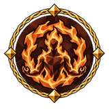
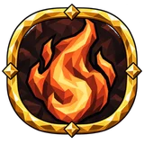
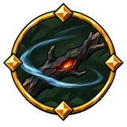
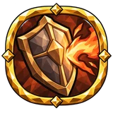
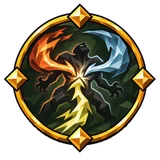
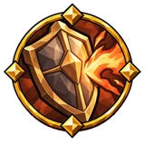
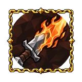

Горение¶
Каждый удар огнём оставляет на цели слой воспламеняемости на 8 с: тем больше, чем большую часть порога недуга цели он нанёс. Слои складываются до 100%, и каждый удар поджигает с шансом, равным их сумме. Горение наносит в секунду 25% огненного урона поджёгшего удара в течение 4 с, со временем; у каждого игрока на цели своё сильнейшее горение. Смола делает цель воспламеняемее, мокрая цель воспламеняется хуже и горит короче; обморожение останавливает урон горения, пока действует, а время горения продолжает идти.
Как это работает¶
Каждое попадание огнём оставляет на враге слой воспламеняемости, а каждое попадание молнией — слой проводимости, каждый на 8 с. Затем попадание поджигает или шокирует с шансом, равным сумме всех слоёв этого вида на враге, включая его собственный, но не больше 100%, плюс ваш плоский шанс поджога или шока × (1 + накопление) × «больше». Базовое здоровье — максимальное здоровье врага без масштабирования сложности мода.
Враг в смоле считается воспламеняемым на 30% больше (слои и смола вместе не больше 100%); на враге с эффектом «промокание» каждый слой воспламеняемости × 0.5.
Эффекты земли, которые поджигают или шокируют, добавляют слои так же и накладывают свой недуг, когда слои на враге достигают 50%.
Что делает: 25% урона огнём поджигающего попадания в секунду в течение 4 с (100% всего), × ваши множители урона недугов и множитель длительного урона (огонь); увеличения урона огнём повторно не действуют. Длительность добавляет секунды, а значит, и урон. Одно горение от каждого игрока на враге: новое заменяет ваше, только если наносит в секунду не меньше. На мокром враге горение догорает в 6 раз быстрее.
С Пламя без погребения ваше горение наносит урон духом вместо урона огнём, × ваш множитель длительного урона для духа.
Множители урона недугов для горения, отравления и кровотечения: × (1 + увеличения урона недугов — общие и этого недуга) × их множители «больше»; плоский урон недугов добавляет свою величину, распределённую на 4 с. Недуги каждого игрока тикают отдельно, раз в секунду.
Скорость длительного урона: × (1 + её увеличения — общие и этого недуга) × «больше», не меньше × 0.1. Горение, отравление и кровотечение наносят урон в секунду × столько и кончаются во столько же раз быстрее, так что общий урон не меняется.
Вместе с другими механиками: Бой и строительство.
Ссылаются¶
Дерево навыков¶
Ключевые узлы¶
| Название | Эффект | |
|---|---|---|
 |
Вечный костёр | +4 урона горения за каждые 100 единиц нынешнего здоровья Вы всегда под действием собственного поджога: он сжигает 4% текущего здоровья в секунду, на него действуют ваши модификаторы огня и горения, сопротивление огню его снижает, а вода не может его потушить. |
Средние узлы¶
| Название | Эффект | |
|---|---|---|
| Алое зарево | 50% увеличение урона горения при критическом попадании недавно | |
| Всепожирающее пламя | 10% увеличение скорости урона горения 20% увеличение урона горения |
|
| Вспышка огня | 10% увеличение скорости урона горения +5% damage over time multiplier от огня |
|
 |
Дыхание углей | 22,5% увеличение урона от огня при активации тринкета недавно Получаете 15% физического урона как дополнительный урон типа «огонь» |
 |
Затяжные недуги | 40% увеличение накопления горения, обморожения и шока 15% увеличение длительности горения, обморожения и шока |
| Искра кострища | 15% увеличение урона от огня 40% увеличение накопления горения |
|
| Искра под кожей | 40% увеличение накопления горения | |
| Лесной пожар | 10% увеличение скорости урона горения | |
| Огненный след | 15% увеличение урона от огня 40% увеличение накопления горения |
|
 |
Пепельная закалка | +10% к сопротивлению накоплению недугов от основы для горения |
| Пожар в жилах | 20% увеличение урона горения | |
| Последняя головня | 10% увеличение урона горения против врагов с низким здоровьем | |
 |
Сходящиеся недуги | 20% увеличение урона против врагов со стихийным недугом 40% увеличение накопления горения, обморожения и шока |
| Тлеющий след | 10% увеличение длительности горения | |
| Укус огня | 40% увеличение накопления горения | |
 |
Шкура у костра | +12,5% к сопротивлению накоплению недугов от основы для горения в движении |
Мастерства¶
| Вариант | Эффект | |
|---|---|---|
| Искрящаяся дубина | 50% урона типа «дробящий» преобразуется в урон типа «огонь» дубинами | |
| Пылающая сталь | 50% урона типа «дробящий» преобразуется в урон типа «огонь» атаками | |
 |
Расплавленный удар | Получаете 6% физического урона как дополнительный урон типа «огонь» |
| Уголь молота | Получаете 27% урона типа «дробящий» как дополнительный урон типа «огонь» при следующем попадании после парирования ×0,55 накопления оглушения при следующем попадании после парирования |
Малые узлы¶
| Характеристика | Узлы |
|---|---|
| 8% увеличение урона горения | 11 |
| 16% увеличение накопления горения | 8 |
| +4% к сопротивлению накоплению недугов от основы для горения | 6 |
| 4% увеличение скорости урона горения | 4 |
| 16% увеличение накопления горения, обморожения и шока | 4 |
Предметы¶
Уникальные предметы (4)¶
| Название | Эффект | Как получить | |
|---|---|---|---|
| Клятва углей | Получаете (15–25)% физического урона как дополнительный урон типа «огонь» (30–40)% увеличение накопления горения (30–40)% увеличение урона горения +(15–25)% resistance от огня |
выпадает с: Владыка Рето | |
| Кузня под рёбрами | (15–25)% полученного урона типа «огонь» восстанавливается как здоровье за 4 с (20–30)% увеличение регенерации здоровья во время горения ×0,8 рунного щита +(15–25)% resistance от огня (20–30)% увеличение урона горения (8–12)% увеличение максимума здоровья |
выпадает с: Яглут | |
| Уголёк под языком | ×0,5 длительности горения на носителе (25–40)% получаемого урона типа «яд» засчитывается как урон типа «огонь» +(10–15)% resistance от огня (20–30)% увеличение накопления горения (15–25)% увеличение регенерации здоровья во время горения |
выпадает с: Яглут | |
| Янтарь Первокорня | одна из 8 характеристик одна из 8 характеристик среди них: Allocated Notable Passives in Radius also grant Получаете (3–5)% физического урона как дополнительный урон типа «огонь» |
выпадает с: Древний |
Свойства (30)
| Свойство | Тип | Выпадает на | С уровня предмета |
|---|---|---|---|
| #% увеличение длительности горения | Суффикс | должен быть: оружие; одно из: дубина or кирка | Луга (1) |
| #% увеличение длительности горения | Суффикс | должен быть: самоцвет and самоцвет Силы | Луга (1) |
| #% увеличение длительности горения, обморожения и шока | Суффикс | должен быть: оружие; одно из: магия крови, магия стихий or скипетр | Луга (1) |
| #% увеличение накопления горения | Суффикс | должен быть: самоцвет and самоцвет Силы | Луга (1) |
| #% увеличение накопления горения, обморожения и шока | Суффикс | должен быть: оружие | Луга (1) |
| #% увеличение накопления горения, обморожения и шока | Суффикс | должен быть: самоцвет and самоцвет Интеллекта | Луга (1) |
| #% увеличение скорости урона горения | Суффикс | должен быть: оружие | Луга (1) |
| #% увеличение скорости урона горения | Суффикс | должен быть: кольцо | Луга (1) |
| #% увеличение скорости урона горения | Суффикс | должен быть: самоцвет | Луга (1) |
| #% увеличение скорости урона горения | Суффикс | должен быть: броня; одно из: на основе брони | Луга (1) |
| #% увеличение скорости урона горения | Суффикс | должен быть: щит; одно из: на основе брони | Луга (1) |
| #% увеличение скорости урона горения | Суффикс | должен быть: самоцвет and самоцвет Силы | Луга (1) |
| #% увеличение урона горения | Префикс | должен быть: оружие | Луга (1) |
| #% увеличение урона горения | Префикс | должен быть: самоцвет and самоцвет Силы | Луга (1) |
| #% увеличение урона горения при критическом попадании недавно | Префикс | должен быть: оружие; одно из: магия крови, магия стихий or скипетр | Луга (1) |
| #% увеличение урона горения против врагов с низким здоровьем | Префикс | должен быть: оружие; одно из: дубина or кирка | Луга (1) |
| +#% к сопротивлению накоплению недугов от основы для горения | Суффикс | должен быть: броня, на основе брони and на основе уклонения | Луга (1) |
| +#% к сопротивлению накоплению недугов от основы для горения | Суффикс | должен быть: щит, на основе брони and на основе уклонения | Луга (1) |
| +#% к сопротивлению накоплению недугов от основы для горения | Суффикс | должен быть: самоцвет and самоцвет Силы | Луга (1) |
| +#% к сопротивлению накоплению недугов от основы для горения | Суффикс | должен быть: самоцвет and самоцвет Силы и Ловкости | Луга (1) |
| +#% к сопротивлению накоплению недугов от основы для горения в движении | Суффикс | должен быть: броня, на основе брони and на основе уклонения | Луга (1) |
| +#% к сопротивлению накоплению недугов от основы для горения в движении | Суффикс | должен быть: щит, на основе брони and на основе уклонения | Луга (1) |
| Получаете #% физического урона как дополнительный урон типа «огонь» | Префикс | должен быть: оружие; одно из: дубина or кирка | Луга (1) |
| Получаете #% физического урона как дополнительный урон типа «огонь» | Префикс | должен быть: самоцвет and самоцвет Силы | Луга (1) |
| #% увеличение накопления горения | Суффикс | не самоцвет | Только на уникальных предметах: Клятва углей, Уголёк под языком |
| #% увеличение урона горения | Префикс | не самоцвет | Только на уникальных предметах: Клятва углей, Кузня под рёбрами |
| ×# длительности горения на носителе | Префикс | не самоцвет | Только на уникальных предметах: Уголёк под языком |
| Получаете #% физического урона как дополнительный урон типа «огонь» | Префикс | должен быть: оружие | только зачарование у стола рунограна |
| Получаете #% физического урона как дополнительный урон типа «огонь» | Префикс | должен быть: оружие | только зачарование у стола рунограна |
| Получаете #% физического урона как дополнительный урон типа «огонь» | Префикс | не самоцвет | Только на уникальных предметах: Клятва углей |
Упоминается в¶
- Накопление
- Недуг
- Недуги на себе
- Огонь и мороз
- Охлаждение
- Промокание
- Сон у костра
- Стихийный урон и недуги
- Урон недугов
- Урон огнём
История патчей¶
| Патч | Изменение |
|---|---|
| Патч 6.0.0 | Каждый удар огнём оставляет на цели слой воспламеняемости на 8 с: тем больше, чем большую часть порога недуга цели он нанёс. Слои складываются до 100%, и каждый удар поджигает с шансом, равным их сумме. Горение наносит в секунду 25% огненного урона поджёгшего удара в течение 4 с, со временем; у каждого игрока на цели своё сильнейшее горение. Смола делает цель воспламеняемее, мокрая цель воспламеняется хуже и горит короче; обморожение останавливает урон горения, пока действует, а время горения продолжает идти. |
| Патч 5.3.0 | Урон огнём заполняет шкалу горения. |
Данные из Path of Valheiman 6.0.12, извлечены 2026-11-13.